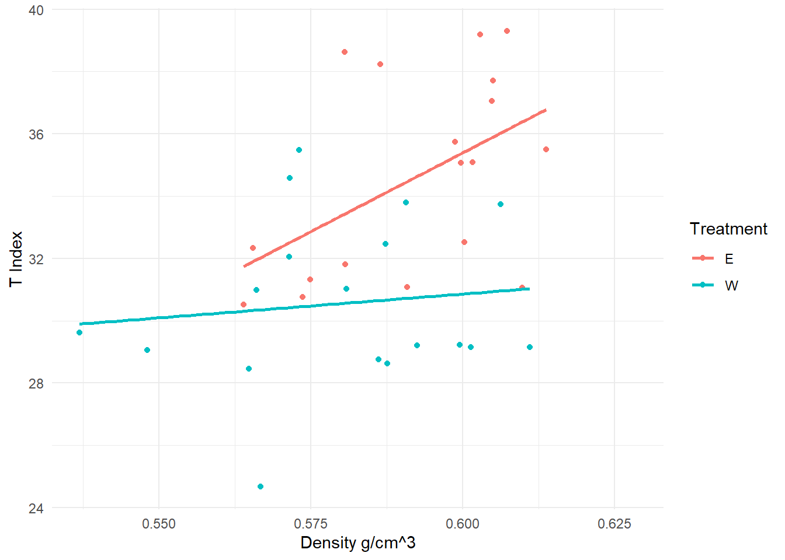
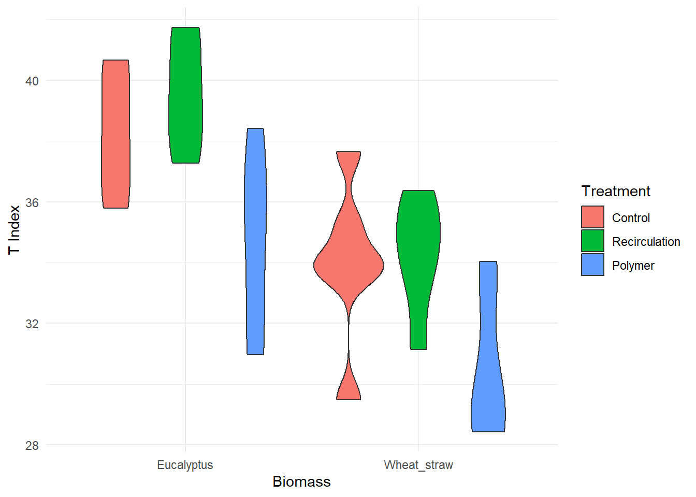
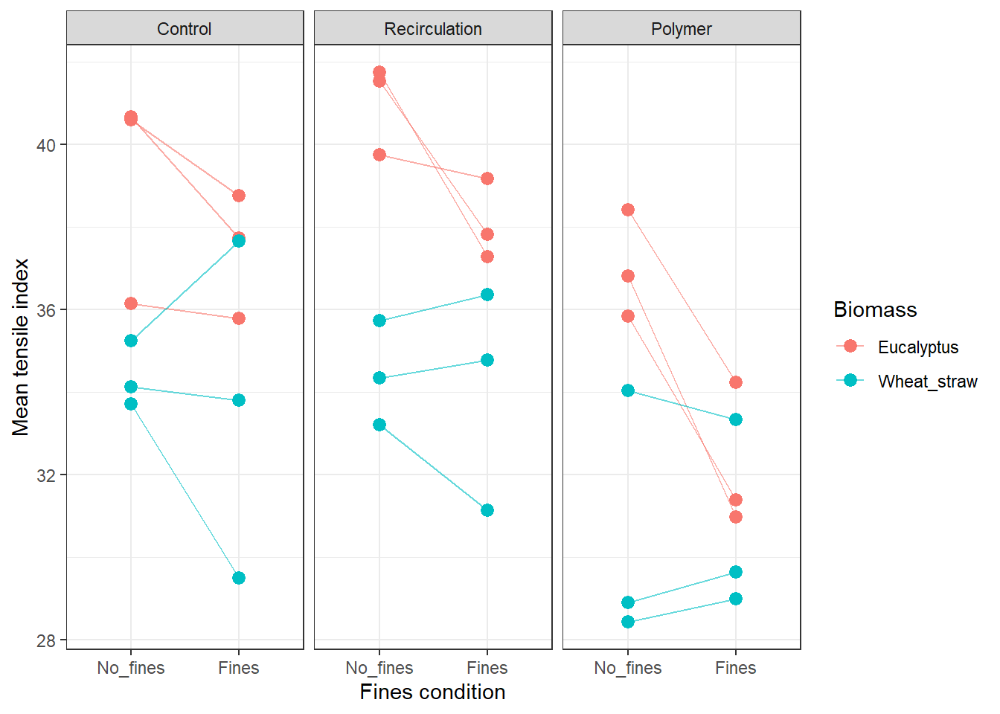

library(tidyverse)
library(readxl)
library(stringr)
library(janitor)
library(units)
library(emmeans)
library(lmerTest)
library(lme4)
library(performance)
library(see)
library(DHARMa)
library(pbkrtest)Data processing
First import the table with weights and thickness
Now we start with the data
fines_data <- read_xlsx("raw_data/Fines_study.xlsx",
sheet = "Handsheet_properties")Extract the pulping data, and just select the kappa number
Here i can select which columns are going to appear in my final table
Pulping_data <- read_xlsx("raw_data/Fines_study.xlsx",
sheet = "Pulping") #|>
# select(Biomass, Code, Kappa, Total_screened_yield, )Here i can select which columns are going to appear in my final table
freeness_data <- read_xlsx("raw_data/Fines_study.xlsx",
sheet = "Freeness") |>
select(ID1, freeness)Pulping_data# A tibble: 6 × 15
Biomass Code Pulping Chemical_charge Liquor_Biomass_ratio pH Temperature
<chr> <chr> <chr> <dbl> <dbl> <dbl> <dbl>
1 W W1 Ammonium… 0.25 6 5.5 150
2 W W2 Ammonium… 0.25 6 5.5 150
3 W W3 Ammonium… 0.25 6 5.5 150
4 E E1 Ammonium… 0.25 4 5.5 160
5 E E2 Ammonium… 0.25 4 5.5 160
6 E E3 Ammonium… 0.25 4 5.5 160
# ℹ 8 more variables: Time_at_max_T <dbl>, Raw_material_OD <dbl>,
# Total_pulp_OD <dbl>, Total_yield <dbl>, Screened_mass <dbl>,
# Screening_yield <dbl>, Total_screened_yield <dbl>, Kappa <dbl>Getting the data from the tensile tests
tensile_data <- read_xlsx("raw_data/tensile_data.xlsx")
tensile_data# A tibble: 105 × 7
ID `F_[N]` `eF_[%]` `tFmax [s]` `ModElas_[MPa]` `TEA_[J/m²]`
<chr> <dbl> <dbl> <dbl> <dbl> <dbl>
1 E1N13 37.6 17.6 2.5 39.3 302.
2 E1N12 36.5 17.9 2 38.5 301.
3 E1N1 36.9 19.3 2.5 38.1 331.
4 E2N1 35.8 19.6 2.5 32.0 315.
5 E2N11 35.4 19.3 2.5 34.8 316.
6 E2N12 38.0 21.0 2.5 38.0 377.
7 E3N1 31.7 13.7 2 35.6 191.
8 E3N11 33.4 14.6 2 38.2 219.
9 E3N13 33.8 14.6 2 38.7 220.
10 E1F11 36.3 18.5 2 36.9 310.
# ℹ 95 more rows
# ℹ 1 more variable: `TStif_ISO [kN/m]` <dbl>We need to create the variables for each of the columns
all_data <- fines_data |>
mutate(biomass = as.factor(Biomass),
Biomass = NULL,
fines = factor(ifelse(
str_detect(ID,"F"), "Y", "N")),
hs_treatment = factor(
case_when(
str_detect(ID, "A") ~ "additive",
str_detect(ID, "5") ~ "recirculation",
str_detect(ID, "[1-4]") ~ "control"),
levels = c("control", "recirculation", "additive")),
Code = str_extract(ID, "^[WE]\\d"),
ID1 = str_extract(ID, "^[WE]\\d.")
) |>
inner_join(Pulping_data, by = join_by(Code)) |>
left_join(freeness_data, by = join_by(ID1)) |>
left_join(tensile_data, by = join_by(ID)) |>
select(-Biomass, -ID1) |>
relocate(Code, biomass, fines, hs_treatment, .after = ID) |>
mutate(
id2 = str_extract(str_remove(ID, "A"), "^.{3}")
)Now we get a code to extract the data from the FQA values
fqa_data <- readRDS("raw_data/fqa_data.rds")Now that all the data is in that table, we need to fix the data
fqa2_data <- fqa_data|>
slice(-c(1:13, 19, 22, 23, 27, 29, 31)) |>
drop_na(E1F1r) |>
pivot_longer(-SampleId,
names_to = "Sample",
values_to = "Value") |>
pivot_wider(names_from = SampleId,
values_from = Value) |>
clean_names() |>
mutate(across(-sample, as.double)) |>
mutate(id2 = str_extract(sample, "^[WE]\\d[FN]")) |>
group_by(id2) |>
summarise(
across(where(is.numeric), mean, na.rm = T
))Warning: There was 1 warning in `summarise()`.
ℹ In argument: `across(where(is.numeric), mean, na.rm = T)`.
ℹ In group 1: `id2 = "E1F"`.
Caused by warning:
! The `...` argument of `across()` is deprecated as of dplyr 1.1.0.
Supply arguments directly to `.fns` through an anonymous function instead.
# Previously
across(a:b, mean, na.rm = TRUE)
# Now
across(a:b, \(x) mean(x, na.rm = TRUE))Setting units, in this code also main calculations of new variables is performed, and the numbers are later strip from their variables so they are compatibles with statistical analysis functions.
area_m2 <- set_units(0.02, "m^2")
hyp_data <- all_data |>
select(c(1:8, 16, 19:23, 25:27)) |>
mutate(weight_g = set_units(weight, "g"),
thickness_um = set_units(thickness,"um"),
force_N = set_units(`F_[N]`, "N"),
# Total_yield = set_units(Total_yield*100, "%"),
# Total_screened_yield = set_units(Total_screened_yield*100, "%"),
ModElas_MPa = set_units(`ModElas_[MPa]`, "MPa"),
tear_gf = set_units(tear_gf, "gf")
) |>
mutate(bw_g_m2 = weight_g * 0.93 / area_m2,
density_g_cm3 = set_units(bw_g_m2 / thickness_um, "g/cm^3"),
T_index_kNm_kg = set_units(force_N/ set_units(15, "mm") / bw_g_m2,
"kN*m/kg"),
Code = factor(Code),
tear_N = set_units(tear_gf, "N"),
tear_index_m2N_kg = set_units (tear_N / bw_g_m2, "m^2*N/kg")
) |>
drop_units() |>
select(-c("F_[N]", "tFmax [s]", "ModElas_[MPa]",
"weight", "thickness", "TEA_[J/m²]"))
#|>
# group_by(
# Code,
# biomass,
# fines,
# hs_treatment
# ) #|>
# summarise(
# T_index = mean(T_index, na.rm = TRUE),
# n_sheets = n(),
# .groups = "drop"
# )library(ggplot2)
ggplot(hyp_data |> filter(hs_treatment == "additive"),
aes(x = density_g_cm3,
y = T_index_kNm_kg,
color = biomass
)) +
geom_point() +
geom_smooth(method = "lm",
se = FALSE) +
labs(
x = "Density g/cm^3",
y = "T Index",
color = "Treatment"
) +
theme_minimal()`geom_smooth()` using formula = 'y ~ x'Warning: Removed 12 rows containing non-finite outside the scale range
(`stat_smooth()`).Warning: Removed 12 rows containing missing values or values outside the scale range
(`geom_point()`).
Running for hypothesis test
First we test whether fines affect tensile or not
\(H_o: \mu_{Fines} = \mu_{NoFines}\)
\(H_a: \mu_{Fines} \neq \mu_{NoFines}\)
mod_full <- lmer(
T_index_kNm_kg ~ biomass * fines * hs_treatment +
(1 | Code),
data = hyp_data
)
anova(mod_full, type = 3)Type III Analysis of Variance Table with Satterthwaite's method
Sum Sq Mean Sq NumDF DenDF F value Pr(>F)
biomass 58.25 58.246 1 4.014 10.9711 0.0294339 *
fines 76.88 76.878 1 90.022 14.4806 0.0002579 ***
hs_treatment 374.25 187.124 2 90.022 35.2464 4.952e-12 ***
biomass:fines 53.72 53.722 1 90.022 10.1190 0.0020138 **
biomass:hs_treatment 7.11 3.553 2 90.022 0.6693 0.5145859
fines:hs_treatment 5.59 2.795 2 90.022 0.5264 0.5925465
biomass:fines:hs_treatment 18.52 9.259 2 90.022 1.7440 0.1806690
---
Signif. codes: 0 '***' 0.001 '**' 0.01 '*' 0.05 '.' 0.1 ' ' 1Based on the p-values, we reject the null hypothesis, and have strong evidence to conclude that the probability of getting this value under the assumption that the null hypothesis is true, is very low. Therefore we conclude that Fines do have an effect on the tensile index of the handsheets.
Also, based on the p-value for the interaction between biomass:fines, we have strong evidence to conclude that there is an interaction between biomass and fines, so the effect of fines differs between eucalyptus and wheat straw.
Based on th p-value for the interaction between fines and the handsheet treatment, we fail to reject the null hypothesis, and conclude that the handsheet treatment does not change the effect of the fines (no direct correlation between the treatment and the fines type)
And finally based on the interaction term between biomass, fines, and treatment, we can conclude that the use of the cationic polymer, or the re circulation does not affect differently the wheat straw of the eucalyptus.
hs_data <- hyp_data %>%
mutate(
Code = factor(Code),
biomass = factor(
biomass,
levels = c("E", "W"),
labels = c("Eucalyptus", "Wheat_straw")
),
fines = factor(
fines,
levels = c("N", "Y"),
labels = c("No_fines", "Fines")
),
hs_treatment = factor(
hs_treatment,
levels = c(
"control",
"recirculation",
"additive"
),
labels = c(
"Control",
"Recirculation",
"Polymer"
)
)
)sample_size_table <- hs_data |>
group_by(
biomass,
Code,
fines,
hs_treatment
) |>
summarise(
n_measured = sum(!is.na(T_index_kNm_kg)),
n_missing = sum(is.na(T_index_kNm_kg)),
.groups = "drop"
)
sample_size_table# A tibble: 36 × 6
biomass Code fines hs_treatment n_measured n_missing
<fct> <fct> <fct> <fct> <int> <int>
1 Eucalyptus E1 No_fines Control 3 1
2 Eucalyptus E1 No_fines Recirculation 3 0
3 Eucalyptus E1 No_fines Polymer 3 1
4 Eucalyptus E1 Fines Control 3 1
5 Eucalyptus E1 Fines Recirculation 3 1
6 Eucalyptus E1 Fines Polymer 3 1
7 Eucalyptus E2 No_fines Control 3 1
8 Eucalyptus E2 No_fines Recirculation 2 1
9 Eucalyptus E2 No_fines Polymer 3 1
10 Eucalyptus E2 Fines Control 3 1
# ℹ 26 more rowscell_data <- hs_data %>%
group_by(
Code,
biomass,
fines,
hs_treatment
) %>%
summarise(
n_handsheets = sum(!is.na(T_index_kNm_kg)),
mean_T_index = if_else(
n_handsheets > 0,
mean(T_index_kNm_kg, na.rm = TRUE),
NA_real_
),
sd_T_index = if_else(
n_handsheets > 1,
sd(T_index_kNm_kg, na.rm = TRUE),
NA_real_
),
se_T_index = if_else(
n_handsheets > 1,
sd_T_index / sqrt(n_handsheets),
NA_real_
),
.groups = "drop"
)library(ggplot2)
ggplot(cell_data,
aes(x = biomass,
y = mean_T_index,
fill = hs_treatment)) +
geom_violin() +
labs(
x = "Biomass",
y = "T Index",
fill = "Treatment"
) +
theme_minimal()
Descriptive statistics
results_summary <- cell_data %>%
group_by(
biomass,
fines,
hs_treatment
) %>%
summarise(
n_cooks = sum(!is.na(mean_T_index)),
mean = mean(mean_T_index, na.rm = TRUE),
sd_between_cooks = sd(mean_T_index, na.rm = TRUE),
se_between_cooks = sd_between_cooks / sqrt(n_cooks),
.groups = "drop"
)
results_summary# A tibble: 12 × 7
biomass fines hs_treatment n_cooks mean sd_between_cooks se_between_cooks
<fct> <fct> <fct> <int> <dbl> <dbl> <dbl>
1 Eucalyptus No_f… Control 3 39.1 2.59 1.50
2 Eucalyptus No_f… Recirculati… 3 41.0 1.10 0.636
3 Eucalyptus No_f… Polymer 3 37.0 1.30 0.752
4 Eucalyptus Fines Control 3 37.4 1.51 0.871
5 Eucalyptus Fines Recirculati… 3 38.1 0.980 0.566
6 Eucalyptus Fines Polymer 3 32.2 1.77 1.02
7 Wheat_str… No_f… Control 3 34.4 0.786 0.454
8 Wheat_str… No_f… Recirculati… 3 34.4 1.26 0.727
9 Wheat_str… No_f… Polymer 3 30.5 3.11 1.80
10 Wheat_str… Fines Control 3 33.6 4.09 2.36
11 Wheat_str… Fines Recirculati… 3 34.1 2.68 1.55
12 Wheat_str… Fines Polymer 3 30.7 2.34 1.35 Cook level responses
ggplot(
cell_data,
aes(
x = fines,
y = mean_T_index,
color = biomass,
group = interaction(biomass, Code)
)
) +
geom_line(alpha = 0.60) +
geom_point(size = 2.8) +
facet_wrap(~ hs_treatment) +
labs(
x = "Fines condition",
y = "Mean tensile index",
color = "Biomass"
) +
theme_bw()
An upward line from No_fines to Fines means fines increased tensile index.
A downward line means fines decreased tensile index.
Different slopes for Eucalyptus and wheat straw suggest a biomass × fines interaction.
Different slope patterns across the three panels suggest a three-way interaction.
mod_cook <- lmer(
mean_T_index ~ biomass * fines * hs_treatment +
(1 | Code),
data = cell_data,
REML = TRUE,
na.action = na.exclude
)